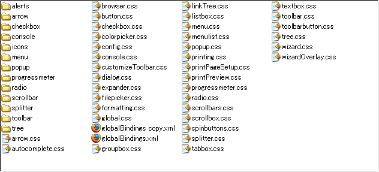

これは面倒臭いことは全てリンクで解決してる、いいかげん&我流なMozillaFirebirdのテーマ作成法です。
一応Firefox0.8を基準に作業していますが、おおかたのMozilla系で応用が利くと思います
作成前に
正直、テーマを一から作るのは結構な労力を要しますので、他人の作ったテーマを改造するのが現実的だと思います。
どのテーマを弄れば良いのかって聞かれたら…（汗。
多分自分のイメージと、一番近いテーマを奴いじれば良いのではじゃないのでしょうか？良く分かりませんが…。
一応作成にはホームページ作成などで使われているスタイルシートと、XML(読める程度でよいと思います)の知識が必要になります。
スタイルシートに関しては、mozillaの独自拡張や(-moz-で始まるのですぐ分かると思いますが)結構マニアックなセレクタなども出てくるので、本格的に書き換えるつもりなら、結構根性がいります。(最初からそんな気合い入れる必要はないと思いますが…)
制作の作業自体は
- jarファイル(正体はzip圧縮)を解凍する
- content.rdfを書き換える
- global/global.cssを書き換える
- globalフォルダのその他のcssファイルを書き換える
- globalの下のフォルダの画像を作り替える
- browzerフォルダの下のcssファイルを作り替える
- browzerフォルダの下の画像を作り替える
おおまかな流れはこんな感じになります。まずは、WEB ARCHIVESのMozilla1.0 のテーマ作成を参照してください。
rdfわかんね…
content.rdfはRDFというXML形式のファイルです。日本語解説サイトもあるのですが、テーマを作成する上では特に見る必要は無いと思います。
例として、fooという名前のテーマを作成する場合を考えてみましょう、その場合、書き換えるところは次の色違いの所になります
<?xml version="1.0"?>
<RDF:RDF xmlns:RDF="http://www.w3.org/1999/02/22-rdf-syntax-ns#"
xmlns:chrome="http://www.mozilla.org/rdf/chrome#">
<RDF:Seq about="urn:mozilla:skin:root">
<RDF:li resource="urn:mozilla:skin:foo"/>
</RDF:Seq>
<RDF:Description about="urn:mozilla:skin:foo"
chrome:displayName="テーマの表示名"
chrome:author="作成者の名前"
chrome:authorURL="テーマを公開しているWebページのURLを入れてください"
chrome:accessKey="T"
chrome:description="説明文部分、実際に表示されるので"
chrome:name="foo"
chrome:image="preview.gif">
<chrome:packages>
<RDF:Seq about="urn:mozilla:skin:foo:packages">
<RDF:li resource="urn:mozilla:skin:foo:communicator"/>
<RDF:li resource="urn:mozilla:skin:foo:global"/>
<RDF:li resource="urn:mozilla:skin:foo:navigator"/>
<RDF:li resource="urn:mozilla:skin:foo:browser"/>
<RDF:li resource="urn:mozilla:skin:foo:mozapps"/>
</RDF:Seq>
</chrome:packages>
</RDF:Description>
<RDF:Description chrome:skinVersion="1.5" about="urn:mozilla:skin:foo:communicator" />
<RDF:Description chrome:skinVersion="1.5" about="urn:mozilla:skin:foo:global" />
<RDF:Description chrome:skinVersion="1.5" about="urn:mozilla:skin:foo:navigator" />
<RDF:Description chrome:skinVersion="1.5" about="urn:mozilla:skin:foo:browser" />
<RDF:Description chrome:skinVersion="1.5" about="urn:mozilla:skin:foo:mozapps" />
</RDF:RDF>
ここまでの部分を書き換えたら、一度圧縮し直してから、インストールしてみてください。これでfooというテーマとして、ベースにしたテーマとMozilla内で別扱いになります。
あ、ちなみに、文字コード宣言を省いているので、XMLの仕様上、文字の保存形式はUTF-8か、UTF-16必須です、RDFの場合はUTF-8が推奨されているので、こちらで保存しておくことをお勧めいたします
他は後で興味でも出てくればどうぞ…。正直、これ以上詳しいことを知る必要は無い事を言いきっておきますが…
スタイルシートの書き換え
結局、テーマの作り替えに大事なことは、何処のフォルダの何のファイルで設定されているかを覚えること、そして知らないモノは探し出してしまう技能です。
MozillaのXULに関しては、網羅的に紹介されている所が無い物ですから、資料の不十分な状態が改善されるまで努力は必要だと思います
詳しい事はこれから解説いたしますので、ちょいちょいと付いて来て下さい
基礎知識の復習
それでは、まずCSS関連の基礎知識から。知っている人には釈迦に説法ですが、幾つか馴染みのない部分を紹介しておきます
そもそもXULってなんですか？
ここを訪れると言うことはHTMLはご存じでしょう。HTMLでは、bodyとかdivとかのタグでWebサイトを書いていましたが、XULではwindowsとかbuttonとかいうタグ名を並べることでインターフェイスを作成することが出来ます
Mozillaの作成時に、OSに依存しないで拡張プログラム等を使ってなおかつカスタマイズ性を上げておりmozillaの強力な武器の一つになっています
あ、ちなみに読みはズールと言います
Mozilla独自拡張関連
先ほども紹介したように、Mozillaでは-mozで始まる独自拡張が存在します、W3Cの規格で計画段階だったり、XULを使うために、必要に駆られて独自拡張した物も存在しますが、作業を行うために最低限必要なのは次の二つですので覚えて置いてください
-moz-border-radius-
少し有名なものですが、
-moz-border-radius:○px;と書くことで、縁の部分を丸くします参考リンク -moz-border-colors-
-moz-border-top-colors:色1 色2 色3 …;と書くことで、ボーダーに２色以上の色をグラデーションの様に付けることが出来ます。
その他に関しては、CSS研究所の独自拡張 XUL関連CSS等を参照してください
CSS2関連
CSSのセレクタですがCSS2で規定されているものに関しては知らない人もいると思うので紹介しておきましょう、見かけることになるのは次の二つです
treecol[insertafter="true"]
- E[foo="warning"]
- foo属性値が「warning」であるE要素にマッチする。
treechildren::-moz-tree-row(selected)
これは基本的には次のセレクタの応用になりますね
E:lang(c)- 内容がcという言語で書かれているE要素にマッチする。（言語情報の指定方法は構造化言語によって異なる。）
先頭に-mozが付いているように、Mozillaの独自拡張になります、意味は今理解する必要はないので、見つけたときは軽く無視しておきましょう
globalフォルダ
それではここから書き換えを始めます、まずは解凍したjarファイルのglobalフォルダに移動してください、ここのCSSファイルを書き換えることから作業が始まります
なんでこんなフォルダがあるのかって言うのは、Mozilla thunderbirdやComposer等の、他のMozilla系列のソフトウェアでも共通に設定するため、等の理由がありますが、細かいこと言わずこれはルールですのでそう言うことでまずはフォルダを開いてみてください
CSSファイルがたくさんありますが、冷静に見て着るとdialog.cssやtree.css等なんだか名前で何処に対応しているのか推測できるファイルがあるのが分かっていただけるでしょうか？
ここにあるCSSファイルの中身を書き換えればMozillaのテーマのデザインを変更していくことが出来ます
正直、当てずっぽうで書き換えてみると結構正解だったりしますから、書き換えたい部分をファイル名から推測をして開いていくのは良い手だと思います<
基本的に、タグの名前はwindowとかtoolbarとかmenuとか直感的に分かるような名前で出来ているので、騙されたと思って、スタイルシートファイルを開いてみれば、最低限の場所は理解できると思いますので勘でいじってみて、インストールしてください。
一応、最初はglobal.cssを書き換えるのが流儀になっていますので、慣れてくればそちらから順次書き換えていくようにしましょう
タグの名前と対応表
対応場所が、いちいち実験していられないと言う方は、2chで拾った対応表があります黒い羽の方でHTML版がありますのでこれをドウゾ…。
対応する場所が分からない場合の解析方法は、MozillaFirefoxの場合実行ファイルのあるフォルダの下。MozillaFirefoxd/chromeフォルダのbrowzer.jarファイルを解凍すると、デフォルトのテーマとxulファイルが出てきますので、これを参考に解析していってください。
若干古い資料らしいのですがXUL チュートリアル(和訳)と対応させながら、タグの名前と、id名を調べることが出来ればあとは、スタイルシートファイルを書き足したりしていくだけです。
それで分からないと言う場合の解決策の一つですが
- 変更したい場所に使われている画像が何処のフォルダに入っているか探す
- 画像のファイル名を取得してgrep系のツールで検索する
と言う方法が結構役に立ちました。
画像の変更
何処のどれが対応しているのかは、画像ですから、見れば分かると思います。分からない場合はファイル名をコピーして、テキストを全文検索してください。読み込んでいるスタイルシートが出てくると思われます。
あまり解説する必要がありませんね…（汗
テーマの扱われ方
インストールされたテーマは
- Windows 95/98/ME
- C:\Windows\Profiles\[ログイン名]\Application Data\Mozilla\Profiles\[ランダムな文字列].slt\chrome
- Windows 2000/XP
- C:\Documents and Settings\[ログイン名]\Application Data\Mozilla\Profiles\[ランダムな文字列].slt\chrome
に入っていますので、ミスがあったら適当に該当するファイルを消してください。
そもそもJARファイルって何？
はっきりとは言えませんがおそらくJAVA Archiveの略でJAVAプログラムをWEB上で配布するときにzip圧縮してまとめることで、回線の無駄を無くすための形式です。
おそらく便利なので流用したのでしょう、良くは知りませんが…
参考リンク
- Firefoxまとめサイト
- WEB ARCHIVES:Mozilla1.0 のテーマ作成
- 5.2ch:おいお前ら、ネスケのテーマを作りませんか？
- 2ch:おいお前ら、ネスケのテーマを作りませんか？
- XULチュートリアル
- XUL チュートリアル(和訳)
- ブラウザ改造 : Netscape6.1/Mozillaのリロードボタンを好きな画像に変えてみる
- さいたま皮:Netscape/Mozilla用 簡易テーマ
- Creating a Skin for Mozilla
- "small_modern"をこっそり配布してみる試み-Trial to distribute small_modern for mozilla-
- Narrow Classic
- "modern"のツールバーボタンを小さくしてみる試み-Trial to make small modern-
- Mozilla.org:Mozilla のカスタマイズ
- Ancient library:about Mozilla
- Mozilla.prg:Mozilla 1.4 のインストール方法